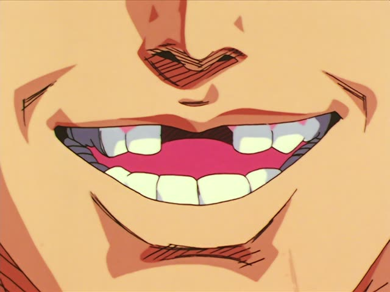

～間・～間に
Noun before it? Add の. な-adjective? Add な.
| Word | Add | Ending | ||
|---|---|---|---|---|
| Noun | 夏休み | の | 間 | During the summer break |
| な-adjective | 静か | な | 間 | While it's quiet |
| Verb | 寝ている | – | 間 | While I'm sleeping |
| い-adjective | 若い | – | 間 | While you're young |
Midnight Diner: Tokyo Stories · Season 2, Episode 6
店にいる間は平気なんですけども。
"I'm fine while I'm at the bar." [but at home alone she can't settle]
間 (あいだ) means "while, during". 間 alone = the whole time: the two things run side by side. 間に = at some point during it: something happens inside that stretch.
On this card, a woman says she's okay the whole time she's at the diner. At home alone, she gets restless. んですけども makes it polite.
Before 間 use the ている form or a state: いる間, 寝ている間. After a noun: の間 (夏休みの間).
The Way of the Househusband · Episode 5
だしを取ってる間に食材を切る。
"While the stock is going, chop the ingredients."
On this card, Tatsu cooks like a pro. 間に: at some point while the stock simmers, you get the chopping done.
Quick Examples
Talking about summer.
夏休みの間、ずっと実家にいました。
"I was at my parents' the whole summer break."
間: the whole time.
PoliteYour friend went to the toilet.
私がいない間に何かあった？
"Did something happen while I was gone?"
間に: at some point during.
CasualA host before a meal.
待っている間に、お茶をどうぞ。
"Please have some tea while you wait."
PoliteYour phone died at night.
寝てる間に電池が切れた。
"The battery died while I was asleep."
CasualWith and without
寝ている間、雨が降っていた。
"It rained the whole time I slept."
寝ている間に、雨が降った。
"It rained at some point while I slept."
Examples from Media
Death Note · Episode 11
そして少しの間待ってください。
"And please wait for a little while."
少しの間 = for a short time.
Oishinbo · Episode 16
じゃあ、蒸らしてる間に味噌汁にとりかかるか。
"Okay, while the rice steams, let's start on the miso soup."
Dungeon Meshi · Episode 3
３人がおとりになって引きつけている間に
"While three of us act as bait and draw it away..."
The plan goes on: one gets through the door.
Goblin Slayer · Episode 5
ハシゴ登ってる間に追いつかれる！
"They'll catch us while we're climbing the ladder!"

Slam Dunk · Episode 20
俺のいない間に、そんな男と…
"While I was gone, with a guy like that..."
いない間 = while I wasn't there. の stands in for が here.
Brush Up Life · Episode 1
何か知らない間にいろいろあったんだね。
"A lot happened without me knowing, huh."
知らない間に = before you knew it.
Shirokuma Cafe · Episode 25
生きてる間に使えればいいけど…
"Hope he gets to use it while he's still alive..."
A sloth knitting a scarf for three years.
Kotaro Lives Alone · Episode 6
お願い！出張中の間だけでいいんだ。
"Please! Just for the time I'm away on business."